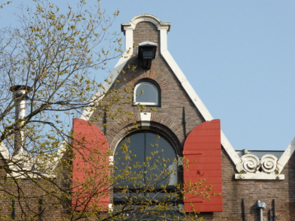
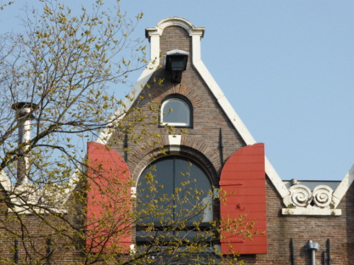
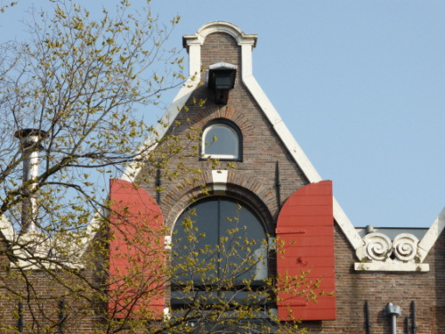
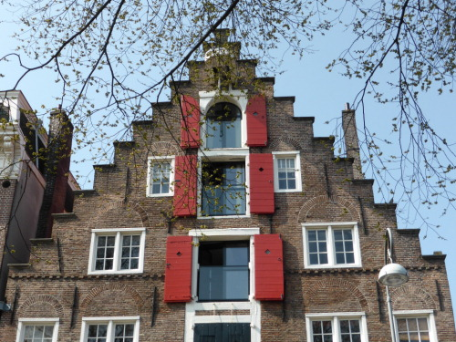

Paseando por Amsterdam llaman la atenciión las terminaciones de las fachadas de las casas, todas parecidas
pero todas diferentes.
Son los llamados hastiales o piñones, un elemento arquitectónicoque remata la fachada y que queda enmarcado
por los dos vertientes del tejado. Se trata de un elemento decorativo cuyo estilo fue evolucionado a lo
largo del siglo XVII hasta ser sustituidos por balaustradas y cornisas barrocas.
El hastial en pico, o de caño, es el más común en los almacenes del siglo XVII y consiste en una
protuberancia rectangular en el extremo del edificio.

El hastial escalonado, más ornamentado, se puso de moda en el primer tercio del siglo XVII en las casa
particulares.

El hastial campana se puso de moda entre 1660 y 1670.